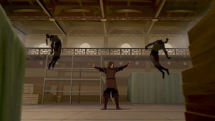

NEXVERSE
For years, bloodbending has been seen as the most broken ability in the Avatar universe. No debate. If someone can control your body, the fight is basically over.

And honestly? That made sense. You can’t dodge something that controls you directly… right?
Well… not exactly.
Because now we’ve seen what happens when someone doesn’t play by the usual rules.
Enter Tagah. No hesitation. No holding back. Just pure speed and aggression.
Bloodbending only works if you can actually lock onto your opponent. But what happens when your opponent is moving faster than you can react?
Imagine raising your hands to bloodbend… and he’s already behind you. At that point, your “OP ability” is useless.
That’s the part people ignore. Bloodbending isn’t instant. It still depends on timing, awareness, and control.
And if someone disrupts that timing? You’re done.
This is where the debate gets interesting.
Because if airbending can really be this effective, then what does that say about Aang?
Was he nerfed in the movie? Or was he just never fighting at full capacity?
Aang’s entire character was built around avoiding harm. He dodged, evaded, and held back—even when he didn’t need to.
Tagah? Completely different mindset.
He fights like someone who understands just how dangerous speed can be… and actually uses it.
So maybe airbending was always this strong.
We just never saw it pushed to that level.
Bloodbending isn’t weak. It’s still one of the most dangerous abilities in the Avatar world.
But it’s no longer unbeatable.
Because against someone fast enough, aggressive enough, and skilled enough…
You might not even get the chance to use it.
And that changes everything.